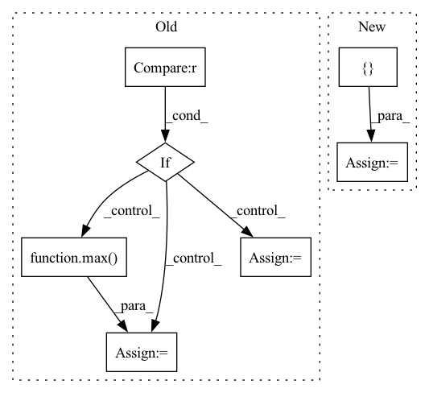

Pattern ID :37371
Before Change
num_workers=args.workers)
train_source_iter = ForeverDataIterator(train_source_loader)
train_target_iter = ForeverDataIterator(train_target_loader)
if args.iters_per_epoch is None :
iters_per_epoch = max( len(train_source_loader), len(train_target_loader))
else:
iters_per_epoch = args.iters_per_epoch
// create model
cudnn.benchmark = TrueAfter Change
// Data loading code
normalize = transforms.Normalize(mean=[0.485, 0.456, 0.406], std=[0.229, 0.224, 0.225])
if args.center_crop:
train_transform = transforms.Compose([
ResizeImage(256),
transforms.CenterCrop(224),
transforms.RandomHorizontalFlip(),
transforms.ToTensor(),
normalizeIn pattern: SUPERPATTERN
Frequency: 3
Non-data size: 7
Instances Fragment ID: 107510688
Project Name: thuml/transfer-learning-library
Commit Name: 540d571d6454ca34ee2687a3fb6a2e63e27be111
Time: 2020-03-16
Author: JiangJunguang1123@outlook.com
File Name: examples/mdd.py
M Class Name: AnonimousClass
N Class Name: AnonimousClass
M Method Name: main(1)
N Method Name: main(1)
M Parent Class:
N Parent Class:
M File Name: examples/mdd.py
N File Name: examples/mdd.py
M Start Line: 42
M End Line: 96
N Start Line: 40
N End Line: 100
Before Change
ff = ii + len(self.tokens[itok])
att = self.instance["attributions"][itok]
if att < 0 :
scaled_att = (-4 / min(self.instance["attributions"])) * att
elif att > 0:
scaled_att = (4 / max( self.instance["attributions"]) ) * att
else:
scaled_att = att
ent = {
"start": ii,After Change
token, rgb = token_rgb.values()
ff = ii + len(token)
ent = {
"start": ii,
"end": ff,
"label": str(rgb.score),
}
ents.append(ent)
ii = ff
to_render = { Fragment ID: 107510689
Project Name: dfki-nlp/thermostat
Commit Name: 039dfada1e0a0b420665e7406907088422ee9c78
Time: 2021-06-14
Author: feldhusnlp@gmail.com
File Name: src/thermostat/data/dataset_utils.py
M Class Name: Thermounit
N Class Name: Thermounit
M Method Name: render(1)
N Method Name: render(1)
M Parent Class:
N Parent Class:
M File Name: src/thermostat/data/dataset_utils.py
N File Name: src/thermostat/data/dataset_utils.py
M Start Line: 96
M End Line: 117
N Start Line: 109
N End Line: 123
Before Change
num_workers=args.workers)
train_source_iter = ForeverDataIterator(train_source_loader)
train_target_iter = ForeverDataIterator(train_target_loader)
if args.iters_per_epoch is None :
iters_per_epoch = max( len(train_source_loader), len(train_target_loader))
else:
iters_per_epoch = args.iters_per_epoch
// create model
cudnn.benchmark = TrueAfter Change
// Data loading code
normalize = transforms.Normalize(mean=[0.485, 0.456, 0.406], std=[0.229, 0.224, 0.225])
if args.center_crop:
train_transform = transforms.Compose([
ResizeImage(256),
transforms.CenterCrop(224),
transforms.RandomHorizontalFlip(),
transforms.ToTensor(),
normalize Fragment ID: 107510695
Project Name: thuml/transfer-learning-library
Commit Name: a5d345dfccf4fe0912edb7566476bf26cf0a9ac0
Time: 2020-03-16
Author: JiangJunguang1123@outlook.com
File Name: examples/mdd.py
M Class Name: AnonimousClass
N Class Name: AnonimousClass
M Method Name: main(1)
N Method Name: main(1)
M Parent Class:
N Parent Class:
M File Name: examples/mdd.py
N File Name: examples/mdd.py
M Start Line: 42
M End Line: 96
N Start Line: 40
N End Line: 100